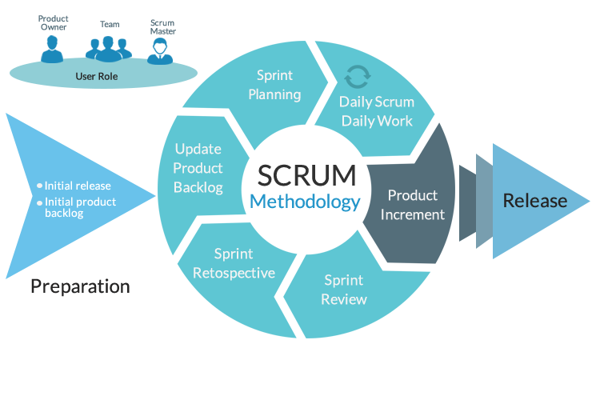

¿Que es la metodologia de Scrum?

Constante retroalimentación por parte del equipo de trabajo y los clientes
posee calendarios de entrega y supervisión bien definidos además, las
actividades se clasifican de acuerdo a su importancia
Caracteristicas
La flexibilidad en la adopción de cambios y nuevos requisitos durante un proyecto complejo
El factor humano
La colaboración e interacción con el cliente
El desarrollo iteractivo como forma de asegurar buenos resultados
Ventajas
Gestión regular de las expectativas del cliente y basada en resultados tangibles
Resultados anticipados (time to market)
Flexibilidad y adaptación respecto a las necesidades del cliente, cambios en el mercado, etc
Gestión sistemática del Retorno de Inversión (ROI)
Desventajas
Para trabajar con Scrum, hay que conocerlo previamente
Las tareas y plazos siempre tienen que estar definidos
No hay lugar para actividades sin terminar
No se recomienda a equipos sin experiencia
Se aplica a equipos reducidos
Puede que se necesiten cambios dentro de la empresa